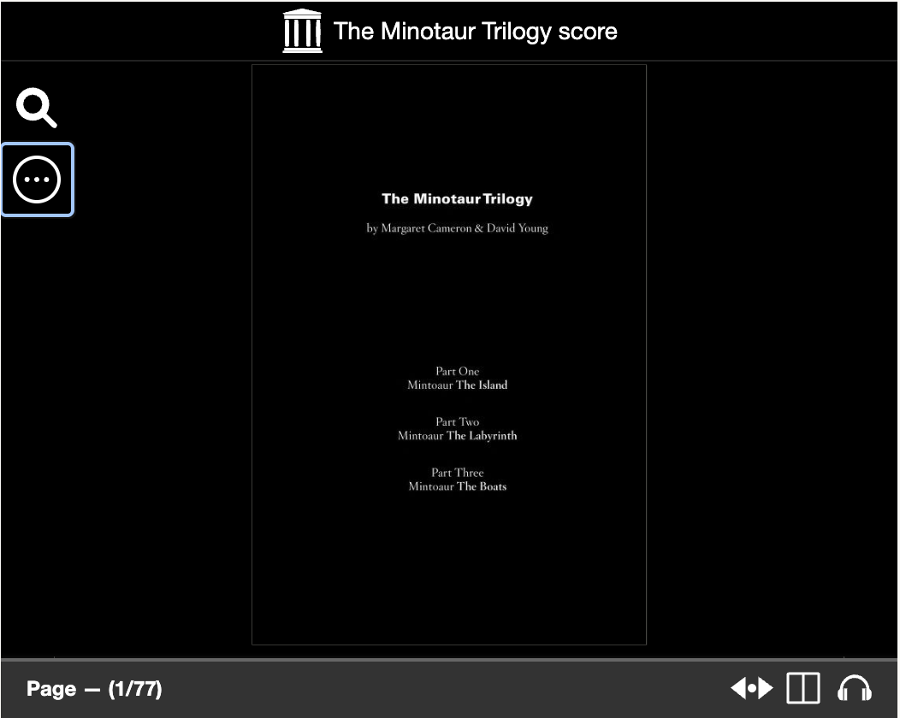

A chamber opera made from two kinds of loss. The first: Monteverdi's L'Arianna, composed in 1608 and almost entirely vanished — only its lament survives. The second: the myth of the Minotaur, Ariadne, and the labyrinth, lifted out of linear time and reassembled in pieces. Together they make something that is less a narrative than a condition — the experience of being inside something you cannot see the shape of.

The Minotaur Trilogy began on an island. The first part, titled The Island, premiered on 26 March 2011 on Bruny Island, Tasmania, as part of Ten Days on the Island. The hall held perhaps a hundred people. It felt closer to ceremony than performance.
The work grew outward from there — into an apartment on St Kilda, Lowland Farm in Mount Macedon, the Lennox Theatre in Parramatta — before arriving at its full form in October 2012, when all three parts were presented together for the first time at the Melbourne Recital Centre as part of the Melbourne Festival. The complete trilogy ran 147 minutes, performed by Caroline Lee, Deborah Kayser and Hellen Sky, with Mark Cauvin on double bass, Matthias Schack-Arnott on percussion and Anastasia Russell-Head at the harpsichord.
Margaret Cameron and I both made or found everything: the music, the texts, the set design, the costumes. But that sounds too clean for what the work actually was. We had been artistic collaborators for a long time, but The Minotaur Trilogy was the place we went the furthest. The process was a continuous negotiation between language and sound — between image and duration, between what is said and what is withheld. We called it ‘the art of everything’.
Margaret died on 20 October 2014 — two years, almost to the day, after the Melbourne Festival premiere. She was 59. The Minotaur Trilogy was our masterpiece.
Video
Recording
The Minotaur Trilogy
Limited edition 3-CD box set — 147 copies
Recorded for ABC Classic FM
Chamber Made Opera Records, 2013
Produced by Haig Burnell (disc 1) and Duncan Yardley (discs 2–3)
Photography by Daisy Noyes and David Young
Available from the Australian Music Centre
Minotaur: The Labyrinth, Canto 1 — all tracks on Archive.org
Score

Photographs
Further reading & links
Performance history
Credits
2013 Art Music Awards
Victorian Performance of the Year
Excellence by an Organisation
Australian Music Centre & APRA AMCOS